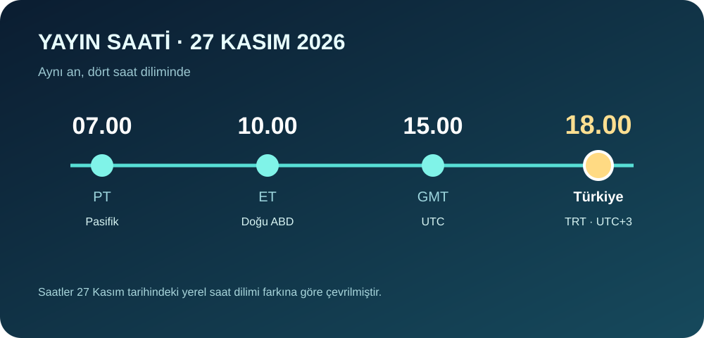
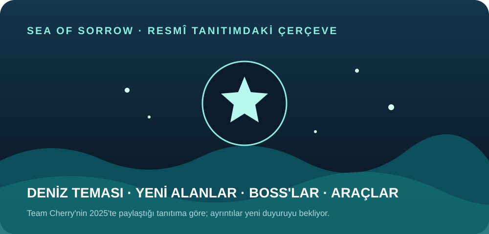
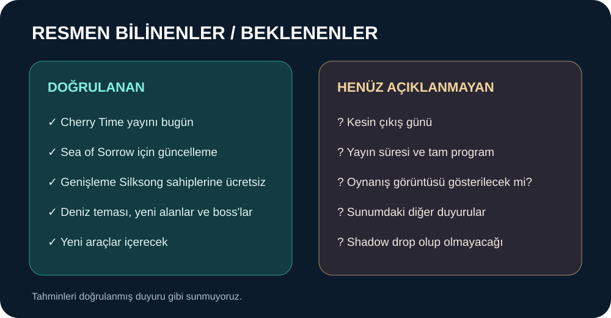

Team Cherry, Hollow Knight: Silksong için hazırladığı “Cherry Time!” özel sunumunu 27 Kasım Cuma günü Türkiye saatiyle 18.00’de YouTube’da yayınlayacak. Stüdyo, programda Sea of Sorrow genişlemesi hakkında bir güncelleme ve başka duyurular paylaşacağını doğruladı. Bu yazı yayın başlamadan önce hazırlandı; henüz açıklanmayan çıkış tarihi ve içerik ayrıntılarını kesin bilgi gibi sunmuyoruz.

Cherry Time Türkiye saatiyle saat kaçta?
Team Cherry’nin YouTube galası 27 Kasım 2026 Cuma, 18.00 TRT saatinde başlayacak. Stüdyonun duyurusu başlangıç saatini 07.00 PT, 10.00 ET ve 15.00 GMT olarak veriyor. Türkiye Kasım sonunda UTC+3 kullandığı için 15.00 GMT, Türkiye’de 18.00’e karşılık geliyor.
| Bölge | Yerel başlangıç |
|---|---|
| Türkiye (TRT) | 18.00 |
| Greenwich (GMT) | 15.00 |
| ABD Doğu (ET) | 10.00 |
| ABD Pasifik (PT) | 07.00 |
Yayın bağlantısı Team Cherry’nin resmî YouTube galası. Bağlantı açıldığında geri sayım görünüyorsa yayın henüz başlamamıştır; bu, bağlantının bozuk olduğu anlamına gelmez.
Sea of Sorrow hakkında şu ana kadar doğrulananlar
Sea of Sorrow, Hollow Knight: Silksong için duyurulan ücretsiz genişleme. Team Cherry’nin 2025’te yayımladığı resmî tanıtım, içeriği deniz temalı bir yolculuk olarak tanımlıyor ve yeni bölgeler, boss savaşları, araçlar ile daha fazlasını vadediyor. Aynı tanıtımda çıkış penceresi 2026 olarak verilmişti.
Bu bilgiler, oyuncuların genişlemeden ne bekleyebileceğini gösteriyor; ancak yeni sunumda hangi bölgelerin veya boss’ların gösterileceği henüz bilinmiyor. Aşağıdaki görsel, stüdyonun doğruladığı genel çerçeve ile açık kalan soruları ayırıyor.

Kesin çıkış tarihi açıklandı mı?
Bu yazı hazırlanırken kesin gün açıklanmamıştı. Resmî bilgiler yalnızca genişlemenin 2026 için planlandığını söylüyor. Cherry Time duyurusunda Sea of Sorrow için “güncelleme” ifadesi var; bu ifade tek başına çıkış tarihi verileceği veya genişlemenin aynı gün yayımlanacağı anlamına gelmiyor.
Bu nedenle sosyal medyada görülen “hemen çıkıyor”, belirli bir gün iddiası veya sızıntı olduğu öne sürülen paylaşımlar Team Cherry doğrulamadıkça söylenti kabul edilmeli. Sağlam teyit için sunum videosunu, stüdyonun resmî hesaplarını ve oyunun mağaza duyurularını kontrol etmek yeterli.
“Bir güncelleme” ifadesi ne anlama geliyor?
Team Cherry’nin duyuru metni, Sea of Sorrow hakkında bir güncelleme verileceğini söylüyor. Bu, proje hakkında yeni bilgi paylaşılacağına dair açık bir işaret; fakat tek başına bir çıkış tarihi, oynanış videosu veya sürpriz yayımlanma sözü değil. Programda başka duyurular olacağı da belirtiliyor, ancak hangi oyun veya konuların gösterileceği açıklanmadı.
Bu ayrım haberin başlığını ve beklentiyi doğru kurmak için önemli. Genişleme 2026 penceresinde duyurulduğu için izleyiciler doğal olarak takvim sorusuna yanıt bekliyor. Yine de yanıtın kesin tarih, yeni bir tanıtım ya da yalnızca geliştirme notu olacağını ancak sunum gösterecek. Yayın başlamadan önce dolaşan sızıntıları doğrulanmış bilgi olarak aktarmamak gerekiyor.

İzleyici için pratik takip planı
Sunumu canlı izleyemeyecekler için en güvenilir yol, Team Cherry kanalındaki aynı galayı daha sonra açmak ve mağaza duyurularını kontrol etmek. Sosyal ağlardaki kesitler bağlamından kopabilir; özellikle “ücretsiz” bilgisi temel oyuna sahip olma şartını ortadan kaldırmaz. Resmî duyuruda genişleme Silksong oyuncularına ücretsiz olarak tanımlanıyor.
Bir tarih açıklanırsa not edilmesi gereken ikinci konu platform ve dağıtım biçimi. Takvimdeki günün yanında duyurunun hangi sürümlere geldiği, indirme adımı gerekip gerekmediği ve bölgesel saat farkı da kontrol edilmeli. Bunlar küçük ayrıntı gibi görünse de “yayında gösterildi” ile “oyuncular şu anda indirebilir” cümleleri aynı şey değil.
Yayında hangi soruların yanıtı aranmalı?
Oyuncuların takip edebileceği başlıklar oldukça net: Sea of Sorrow’un çıkış günü, genişlemenin Silksong’un hangi sürümlerine ve mağazalarına geleceği, yeni oynanış görüntülerinin gösterilip gösterilmeyeceği ve Team Cherry’nin “başka duyurular” ifadesiyle neyi kastettiği. Bunlar şu an için soru; resmî yanıt geldiğinde haberin bu bölümü güncellenebilir.
- Takvimine Türkiye saatiyle 18.00 için hatırlatıcı ekle.
- Yayın başlamadan önce Team Cherry’nin doğrulanmış YouTube kanalını aç.
- Kesin çıkış tarihi ile yalnızca 2026 penceresini birbirine karıştırma.
- Sunum sonrasında tarih ve platform bilgisini mağaza sayfasıyla karşılaştır.
Kaynaklar ve güncelleme notu
Yazı, Team Cherry’nin Cherry Time! sunum duyurusu ve Sea of Sorrow resmî tanıtımı temel alınarak hazırlandı. Yayın saati ve sunum kapsamı ayrıca Gematsu’nun duyuru haberiyle çapraz kontrol edildi.
Güncelleme notu: Metin, 27 Kasım 2026’da Türkiye saatiyle 13.20 civarında, yayın başlamadan önce hazırlandı. Sonradan açıklanan bilgiler bu ön izlemeye dahil değildir.